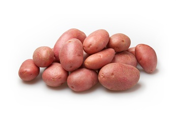
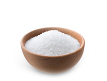
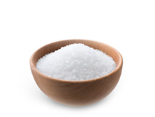
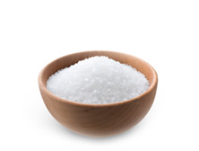

Aardappelen met kaas
De omschrijving
Het lekkere en gezonde gerecht komt uit Nederland waarin de aardappels altijd verse en biologie zijn, bovendien vind je daar de allerlei soorten van de kaas. Het is een aardappelgerecht met gesmolten kaas.
Bereidingstijd
Bereidingstijd 25 - 30 minuten
Het aardappelgerecht beschikt voor 4 personen.
Ingrediënten:

1 kilo aardappelen (bintjes)
 500 - 750 gram jong/belegen kaas

Voeg zout naar behoefte toe
500 - 750 gram jong/belegen kaas

Voeg zout naar behoefte toe
500 - 750 gram jong/belegen kaas

Voeg zout naar behoefte toe
Bereidingswijze
- Kook de aardappelen volgen traditionele wijze.
- Na het koken natuurlijk de aardappelen afgieten, Ten tijde van het koken van de aardappelen kun je vast de kaas in blokjes snijden ongeveer blokjes van 2,5 centimeter
- Na het koken en afgieten van de aardappelen dan kunnen de blokjes kaas bovenop de aardappelen en laat dit smelten, let op de aardappelen dat ze niet aanbranden.
- De kaas zal zich tot een grote massa maken na ongeveer een minuut of 4 of 5 Haal de pan van het kooktoestel en stamp de inhoud flink door elkaar met een stamper, zodat er een soort hutspot onstaat.

Voor meer informatie waar u de detail van het gerecht kan opzoeken, klik maar op de link